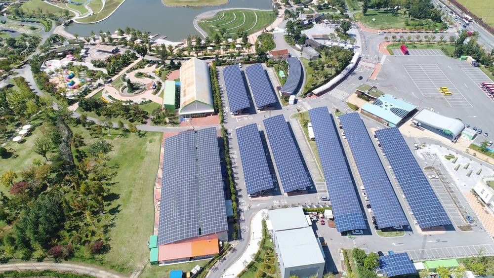

함안군, 지방공사와 손잡고 공영주차장 3곳에 태양광…2027년 착공·2030년 준공 목표

주차구획 1,000㎡ 넘는 공영주차장 재생에너지 의무화 대비…군은 행정 지원, 공사는 설치·운영 맡아
경남 함안군이 함안지방공사와 업무협약을 맺고 공영주차장에 태양광 발전설비를 세우는 사업에 들어간다. 「신에너지 및 재생에너지 개발·이용·보급 촉진법」 개정으로 주차구획 면적이 1,000㎡ 이상인 공영주차장에는 재생에너지 설비를 갖춰야 하는 만큼, 의무 적용에 앞서 준비에 나선 것이다.
첫 대상지는 이용객이 많고 볕이 잘 드는 함주공원 공영주차장, 함안스포츠센터 주차장, 칠원 구성지구 공영주차장 등 3곳이다. 협약에 따라 함안군은 사업에 필요한 행정 지원을 맡고, 함안지방공사는 발전설비 설치와 이후 운영·유지관리를 전담한다.
군과 공사는 전기사업 허가와 한국전력과의 전력수급계약(PPA) 등 인허가 절차를 마친 뒤 2027년 착공해 2030년 준공한다는 계획이다. 차석호 함안군수는 공영주차장과 유휴부지가 친환경에너지를 만드는 거점이 될 것이라며 군민이 체감하는 탄소중립을 이끌겠다고 밝혔다.
시민에너지 관점
공영주차장 태양광 의무화로 전국 지자체가 같은 숙제를 받았고, 함안처럼 지방공사가 직접 짓고 운영하면 전기 판매 수익이 외부 사업자가 아니라 지역 공공 재정에 남는다. 다만 착공까지 1년, 준공까지 4년이 남은 만큼 '공사가 운영한다'에서 멈추면 군민은 그늘막 아래 주차하는 이용자에 그칠 수 있다. 독일 슈타트베르케(지역 공기업)들은 시민 출자 지분을 함께 받아 수익을 주민 배당으로 돌려 왔다. 함안군과 공사는 사업 설계 단계에서 군민 출자·수익 환원 방식을 함께 정해, 주차장 발전소를 군민이 함께 가진 발전소로 만들어야 한다.
출처: 프라임경제 2026-11-13 강경우 원문 보기
咸安郡、地方公社と組み公営駐車場3カ所に太陽光…2027年着工・2030年完成目標
駐車区画1,000㎡超の公営駐車場への再エネ義務化に備え…郡が行政支援、公社が設置・運営
慶尚南道咸安郡は咸安地方公社と業務協約を結び、公営駐車場に太陽光発電設備を設ける事業に乗り出す。「新エネルギー及び再生可能エネルギー開発・利用・普及促進法」の改正で駐車区画面積が1,000㎡以上の公営駐車場には再エネ設備の設置が義務付けられたため、適用に先立って準備を始めた形だ。
最初の対象地は利用者が多く日当たりのよい咸州公園公営駐車場、咸安スポーツセンター駐車場、漆原九城地区公営駐車場の3カ所。協約により郡は事業に必要な行政支援を担い、公社は発電設備の設置とその後の運営・維持管理を専任する。
郡と公社は電気事業許可や韓国電力との電力受給契約（PPA）などの手続きを終えた後、2027年に着工し2030年の完成を目指す。車錫鎬（チャ・ソクホ）郡守は、公営駐車場と遊休地が環境配慮型エネルギーを生む拠点になると述べ、郡民が実感できる脱炭素を進めると強調した。
市民エネルギーの視点
公営駐車場への太陽光義務化で全国の自治体が同じ宿題を抱えた。咸安のように地方公社が自ら建てて運営すれば、売電収益は外部事業者ではなく地域の公共財政に残る。ただ着工まで1年、完成まで4年あり、「公社が運営する」で止まれば郡民は日陰に車を止める利用者にとどまりかねない。ドイツのシュタットベルケ（地域公営企業）は市民出資を受け入れ、収益を住民配当に回してきた。郡と公社は設計段階から郡民出資と収益還元の仕組みを決め、駐車場の発電所を郡民が共に持つ発電所にすべきだ。
出典: 프라임경제 2026-11-13 강경우 原文を読む
咸安郡携手地方公社在3处公营停车场建太阳能…目标2027年开工、2030年竣工
为应对停车面积超1,000㎡公营停车场的可再生能源义务化…郡负责行政支持，公社负责建设与运营
韩国庆尚南道咸安郡与咸安地方公社签署业务协议，启动在公营停车场建设太阳能发电设施的项目。根据修订后的《新能源和可再生能源开发、利用、普及促进法》，停车区面积在1,000㎡以上的公营停车场必须配备可再生能源设施，咸安郡此举是在义务正式适用前提前布局。
首批选址为使用者多、日照条件好的咸州公园公营停车场、咸安体育中心停车场和漆原九城地区公营停车场共3处。根据协议，咸安郡负责项目所需的行政支持，咸安地方公社专门负责发电设施的建设及此后的运营和维护。
郡与公社计划在完成电力事业许可和与韩国电力公司签订购电协议（PPA）等审批程序后，于2027年开工、2030年竣工。郡守车锡镐表示，公营停车场和闲置用地将成为生产环保能源的据点，并将推动郡民切身感受到的碳中和。
市民能源视角
公营停车场太阳能义务化让全国地方政府面对同一份作业。像咸安这样由地方公社自建自营，售电收益就会留在地方公共财政，而不是流向外部企业。但距开工还有1年、距竣工还有4年，如果止步于"公社运营"，郡民可能只是在遮阳棚下停车的使用者。德国的城市公用事业公司（Stadtwerke）长期吸收市民出资，并把收益以分红形式回馈居民。咸安郡和公社应在设计阶段就定下郡民出资与收益返还方式，让停车场电站成为郡民共有的电站。
来源: 프라임경제 2026-11-13 강경우 查看原文
Haman County teams up with local public corporation to put solar on three public car parks, aiming for 2030 completion
Preparing for the renewable-energy mandate on public car parks over 1,000㎡; county handles administration, corporation builds and runs the plants
Haman County in South Gyeongsang Province has signed a business agreement with the Haman Local Public Corporation to install solar power facilities on public car parks. A revision of Korea's Act on the Promotion of New and Renewable Energy now requires public car parks with a parking area of 1,000㎡ or more to host renewable energy facilities, and the county is moving ahead of the obligation.
The first three sites are the Hamju Park public car park, the Haman Sports Center car park and the Chilwon Guseong district public car park, chosen for heavy use and good sunlight. Under the agreement, the county will provide administrative support, while the corporation will install the panels and take charge of operation and maintenance.
After securing an electricity business licence and a power purchase agreement (PPA) with Korea Electric Power Corporation, the two plan to start construction in 2027 and finish by 2030. County Governor Cha Seok-ho said the car parks and idle land would become hubs for clean energy production, delivering carbon neutrality that residents can feel.
Citizen Energy View
The car-park solar mandate has handed every local government the same homework, and when a local public corporation builds and runs the plants, as in Haman, power-sales revenue stays in local public finances rather than going to outside developers. But with a year until construction and four until completion, stopping at "the corporation operates it" would leave residents as mere drivers parking under the panels. Germany's Stadtwerke have long taken in citizen equity and paid profits back as resident dividends. Haman and its corporation should decide on resident investment and revenue sharing at the design stage, so the car-park plants become power plants residents co-own.
Source: 프라임경제 2026-11-13 강경우 Read the original